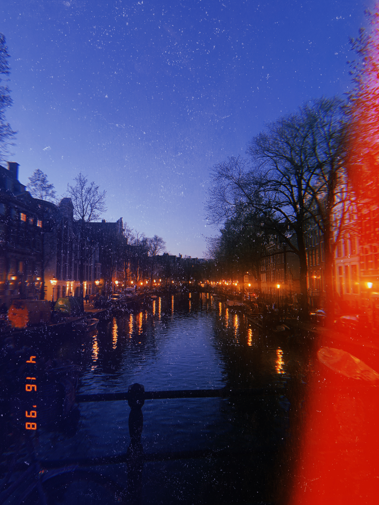
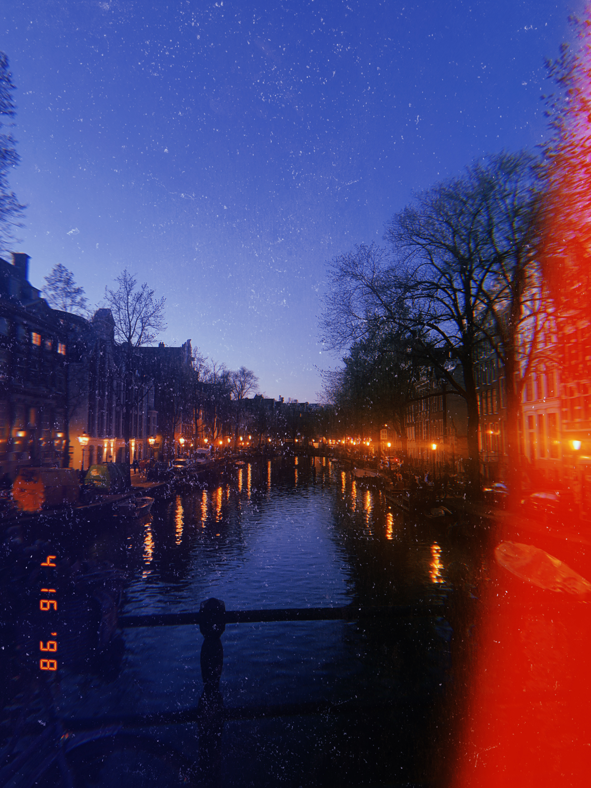

About Me
Hi! My name is Nic Ekstrand. Currently, I am a junior in high school and I’m 16. I go to Menlo School and have been for nearly 6 years since I started in 6th grade.
I took a liking to computer science roughly during 7th grade when my mom signed me up for coding lessons for scratch.
These lessons eventually developed into full-scale languages like python and HTML.
So far, I have taken a comp sci class every year of high school, and I am looking to being a TA in one of these classes during my senior year.
Out of school, I have been golfing for a little under a year now and I have been playing water polo for almost 4 years.
When I’m not coding or playing sports, I am either doing homework for school or cooking.
Cooking has always been my favorite hobby at home and since I am known for being the picky eater of the family, I find it very enjoyable to make food the exact way I want it.
During my sophomore year of high school, I developed a love for photography and making things look beautiful.
While I was in Amsterdam with my family to visit my brother during his semester abroad, the scenery was amazing and I couldn't stop taking photos.
After the trip, I spent hours editing various images in order to make the scenery seem as beautiful as possible.
I have a brother who is a senior in college and a sister who recently graduated college, now working in a biology lab in San Francisco.
I also have a dog named Ridley who is 4 years old and he’s the cutest little boy I have ever seen in my life.


 
